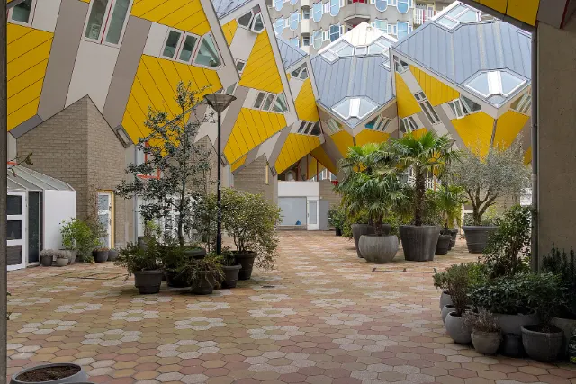

Already here.
Open existing calculators and workspaces. Educational tools support learning, not unapproved in-exam use.
Unofficial, student-run resources for the EU-HEM master's program

RESOURCES YOUR EVERYDAY COMPANION
Study smarter. Live easier.
Make more of your EU-HEM journey.
New in the Toolkit: 8 practical collections, your own lists and 12 more provider resources.
BUILT HERE · AVAILABLE NOW
Explore distributions, confidence intervals and tests, with worked steps.
A LITTLE LESS SEARCHING
Try a broader word or clear the filters.
Browser storage is unavailable. Your lists work in this page session only; export a backup before closing it.
KNOW WHAT YOU'RE OPENING
Open existing calculators and workspaces. Educational tools support learning, not unapproved in-exam use.
Provider links are selected and described, not integrated with your account. Review access, costs, privacy and course rules.
Read proposed scope and why it may help. No fake launch buttons, popularity statistics or promised release dates.
My lists saves list names, known tool IDs and your reviewed checkboxes on this device, separately from bookmarks and course progress. Nothing is sent to the Hub. Export/import is a manual JSON backup, not account synchronisation. Compare selections last only for this page session. Avoid personal or confidential information in list names. Clear lists from the My lists section.
Provider descriptions were reviewed on . This is not a live availability or price monitor. Open an entry's details for the provider source. Fees, account requirements, eligibility and features may change. Inclusion is an editorial suggestion, not university endorsement or a commercial partnership.
Bookmarks and optional recent-tool IDs are saved locally in this browser. No datasets, personal profiles or usage counts are collected by this catalogue. Other pages and external providers have their own privacy practices. Avoid uploading protected teaching materials or confidential data to AI and cloud services without permission.
Toolkit preferences are separate from your course progress. Clearing them will not remove your study plan, notes progress or other Hub data.
Existing locally hosted city photos, displayed with crops and a colour overlay: Bologna — Vanni Lazzari, 2017, original, CC BY-SA 4.0. Oslo — Øyvind Holmstad, 2014, original, CC BY-SA 3.0. Innsbruck — -wuppertaler, 2022, original, CC BY-SA 4.0. Rotterdam — Trougnouf (Benoit Brummer), 2021, original, CC BY 4.0.
Browser storage is unavailable. Bookmarks work for this page session but may not survive a reload.


.jpg){kind=link}